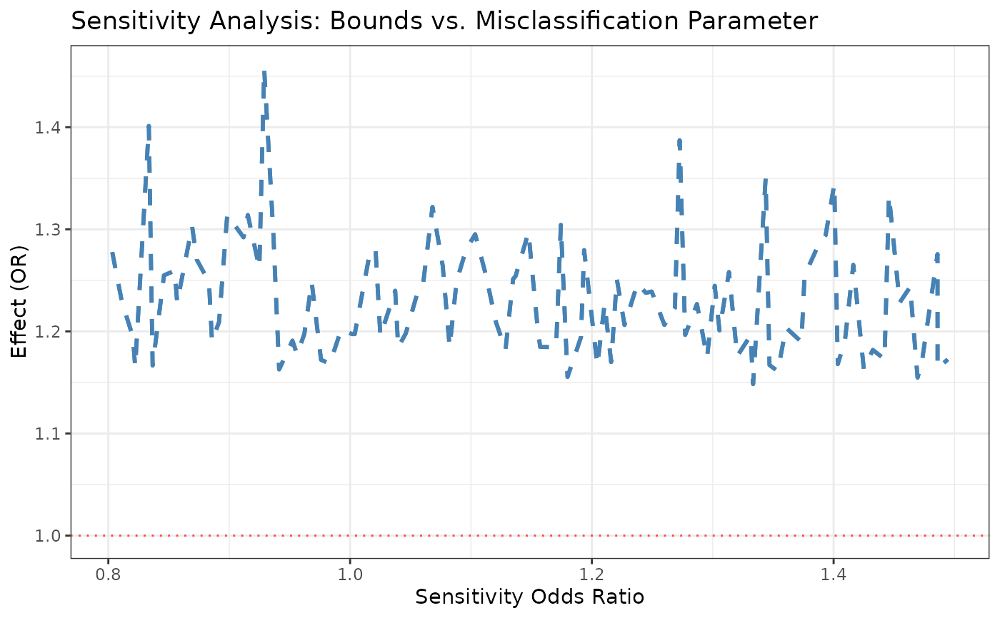
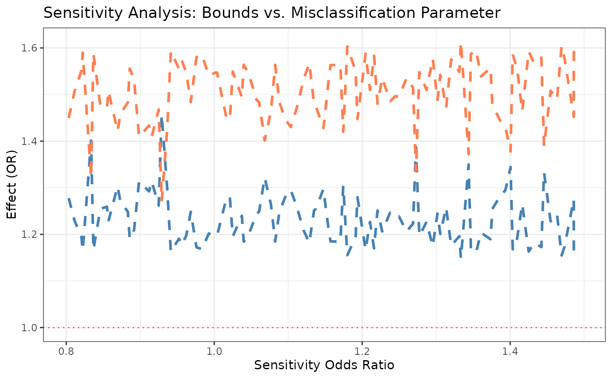
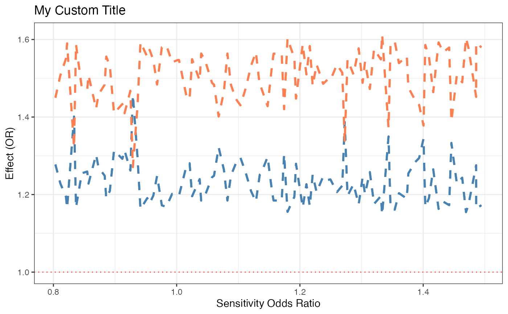

Generate publication-quality visualizations of partial identification bounds as a function of sensitivity parameters.
Arguments
- bounds_object
An object of class
medrobust_boundsreturned bybound_ne.- param
Character vector specifying which parameter(s) to plot on the x-axis. Options: "psi_sn", "psi_sp", "sn0", "sp0". Can specify multiple for faceted plots.
- effect
Character string: "NIE", "NDE", or "both" (default).
- plot_type
Character string specifying plot type:
"bounds" (default): Line plot showing upper and lower bounds
"heatmap": 2D heatmap of bound width (requires two parameters)
"contour": Contour plot of bounds (requires two parameters)
- show_naive
Logical indicating whether to overlay the naive estimate (assuming no misclassification). Default is TRUE.
- show_null
Logical indicating whether to show horizontal line at null value (effect = 1 for OR/RR, effect = 0 for RD). Default is TRUE.
- color_scheme
Character string specifying color palette: "default", "viridis", "colorblind", "grayscale".
- theme
Character string for ggplot2 theme: "bw" (default), "minimal", "classic", "void".
- ...
Additional arguments passed to ggplot2 functions.
Details
The function creates different plot types to visualize sensitivity analysis:
Bounds plot: Shows how the lower and upper bounds vary as a function of one sensitivity parameter, with other parameters held fixed or averaged.
Heatmap: Shows the width of the identification region (upper - lower) as a function of two sensitivity parameters simultaneously.
Contour plot: Shows contour lines of the bounds in 2D parameter space.
Examples
# \donttest{
# Compute bounds to plot (see ?bound_ne)
sim <- simulate_dm_data(
n = 8000,
true_params = list(beta_AM = log(2.5), theta_AY = log(1.5), theta_MY = log(2.5)),
dm_params = list(sn0 = 0.9, sp0 = 0.9, psi_sn = 1, psi_sp = 1),
misclass_type = "mediator", confounders = 1, seed = 1
)
set.seed(1)
bounds <- bound_ne(
data = sim@observed, exposure = "A", mediator = "M_star", outcome = "Y",
confounders = "C1", misclassified_variable = "mediator",
sensitivity_region = list(
sn0_range = c(0.80, 0.99), sp0_range = c(0.80, 0.99),
psi_sn_range = c(0.8, 1.5), psi_sp_range = c(0.8, 1.5)
),
n_grid = 10
)
#> Validating inputs...
#> Preparing data...
#>
#> Computing bounds for mediator misclassification...
#> Grid resolution: 10 points per dimension
#> Total parameter sets to evaluate: 10000
#>
#> Using advanced grid search method: lhs
#>
#> === Latin Hypercube Sampling ===
#> Samples: 100
#>
|
| | 0%
|
|==== | 5%
|
|======= | 10%
|
|========== | 15%
|
|============== | 20%
|
|================== | 25%
|
|===================== | 30%
|
|======================== | 35%
|
|============================ | 40%
|
|================================ | 45%
|
|=================================== | 50%
|
|====================================== | 55%
|
|========================================== | 60%
|
|============================================== | 65%
|
|================================================= | 70%
|
|==================================================== | 75%
|
|======================================================== | 80%
|
|============================================================ | 85%
|
|=============================================================== | 90%
|
|================================================================== | 95%
|
|======================================================================| 100%
#> Compatible: 100/100 (100.0%)
#>
#> ============================================================
#> COMPUTATION COMPLETE
#> ============================================================
#> Time elapsed: 2.74 seconds
#> Compatible parameter sets: 100 / 100 (100.0%)
#>
#> NIE Bounds (OR scale): [1.148, 1.457]
#> NDE Bounds (OR scale): [1.271, 1.613]
#> ============================================================
#>
# Basic bounds plot
sensitivity_plot(bounds, param = "psi_sn", effect = "NIE")

# Show both effects
sensitivity_plot(bounds, param = "psi_sn", effect = "both")

# Customize the returned ggplot object
p <- sensitivity_plot(bounds, param = "psi_sn") +
ggplot2::labs(title = "My Custom Title") +
ggplot2::theme(legend.position = "bottom")
p

# }